做為第一次寫網站，我該拿出來（或者說只能拿出來）的文章絕對就是這篇了。 耗費約7小時觀察MV細節，4小時做紀錄、分析，並寫下這篇文章。 不敢說自己分析得有多好，或者有多精準，但投入在其中的心意絕對是最真實的。
整體MV背景
不管是色彩、衣裝或是環境都可以看出MV很明顯的被分成了前後兩個部分。
而由四人從前半的活潑系衣裝，到後半的成熟打扮也可得知MV中的整體時間線是從過去
→ 現在劃分的，
色彩上也有很強烈的對比：前半部以黃色和亮色為主，後半則是近乎全白灰的色調。
黃色通常被視為是光線、活力的象徵；白灰色除了有專業感以外，同時也帶有單調、冷淡的氣息在。
能看出後半的四人除了衣裝都是白色系以外，衣服與髮型也比前半成熟許多，視覺上有種收斂感，相較之下前半的打扮則明顯帶有活潑跟陽光的氣息。
髮型部分也是採用最原始的設計。
根據MV發布日期(9/13)與R團出道日(9/9、10)相近這點，MV中的打扮轉變可以視為是ReGLOSS完整迎來兩周年後的模樣。
與先前青澀、稚氣的模樣不同，
歷經兩年後他們已經變得更成熟，各方面也都成長了許多。
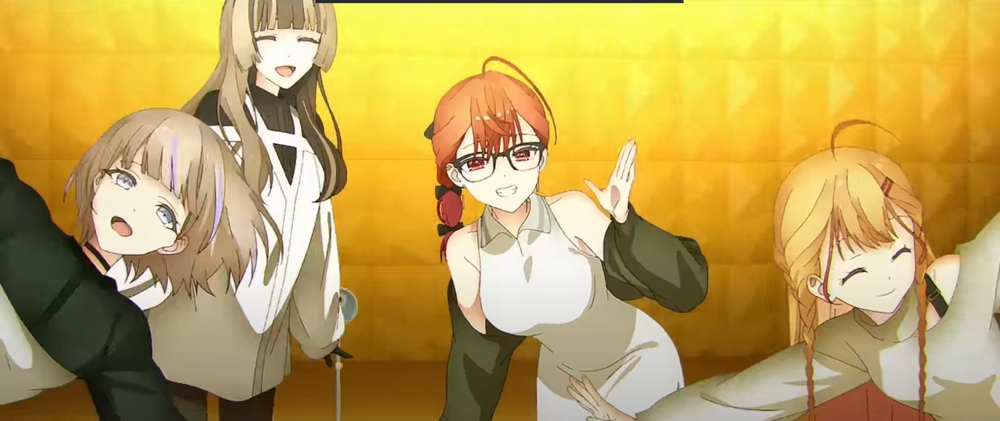
// 近收尾處的MV截圖，能看出四人的衣裝皆為白灰色，打扮成熟許多。
關於MV中的色彩
稍微提一嘴關於三原色的概念。
三原色光模式，顧名思義就是RGB系統。將紅、綠、藍三種顏色的色光以不同的比例相加混色所形成，三種色光重疊到的地方則會形成純白色的光。
各位是否有遇過這種狀況，或者聽別人提過：自己的物品被太陽曬到褪色。至於衣服也不例外，在太陽下照久了也容易讓布料褪色。
回到MV，這可以用來解釋後半部近乎純白灰色的色調 ——
ReGLOSS本就是個音樂導向團體。上舞台的機率比起其他人高出許多，而舞台上一定會有打光設備。在表演的同時雖然成長了不少，但同時也被台上的強烈燈光照耀到失去了自己的色彩。
後半部的面部表情相較前半也有些緊繃。雖然他們都會正視鏡頭，但眼神卻總像是穿透鏡頭，甚至穿透觀眾，給人一種空洞感。
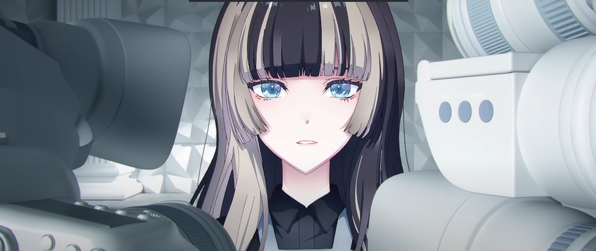
// らでん近面對鏡頭的截圖，應該算是整部MV中眼神最明顯空洞的一幕。
らでん部分
前半段的らでん拿著手持的微距望遠鏡，這種望遠鏡通常用於觀賞畫作的細節部分，但らでん卻是拿著望遠鏡坐在類似電影院的地方。
這裡可以解讀成初期らでん的狀態。雖然有著很專業的東西（望遠鏡→對應藝術專門知識），卻因為尚未熟悉這個圈子，無法順利使用手中的工具。（前期尚未確立風格時的狀況）
而透過貓眼向外看的這一幕，在外面有動靜時先去查看貓眼，表示你不確定門外有什麼，感到不安、未知。但會查看，也就代表你好奇著外面有什麼東西。
這個動作同時透露出了對外界（Vtuber這個圈子）的好奇及不安感。後面也沒有出現任何開門的動作，代表不確定這樣的自己是否能夠打開門迎接外面的一切。
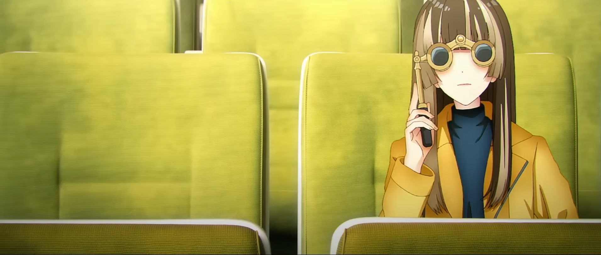
// らでん拿著觀賞畫作的望遠鏡坐在電影院的椅子上。
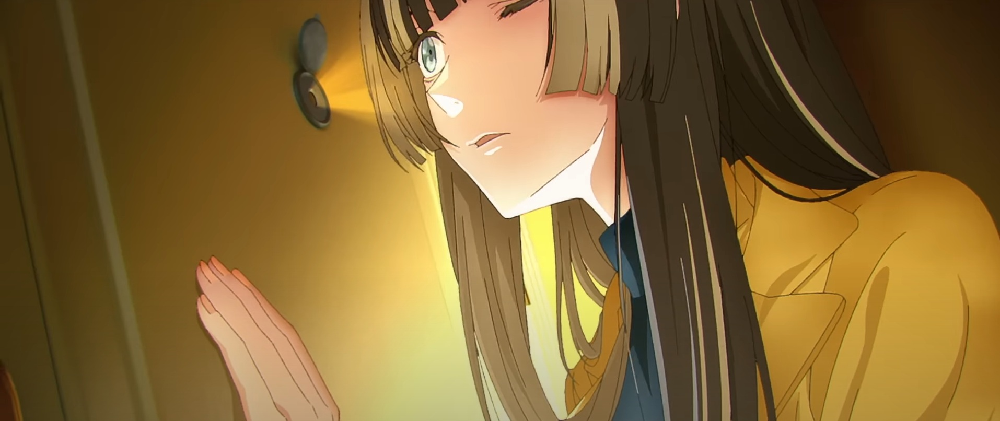
// らでん往貓眼向外查看一幕。
來到後半，らでん站在畫框後被一大堆攝影機與麥克風對準的畫面。
被攝影機當成焦點，說明他已經從觀看者轉為被觀看者（開始直播），畫框的存在表明已經確立出自己的風格（藝術型Vtuber），但後面的畫面卻逐漸拉近，以不太舒適的距離聚焦在拉電臉上。
後面幾幕能從肢體動作看出拉電其實有些不自在，而畫面拉近後，原本框住拉電的畫框則早已消失在鏡頭範圍外。
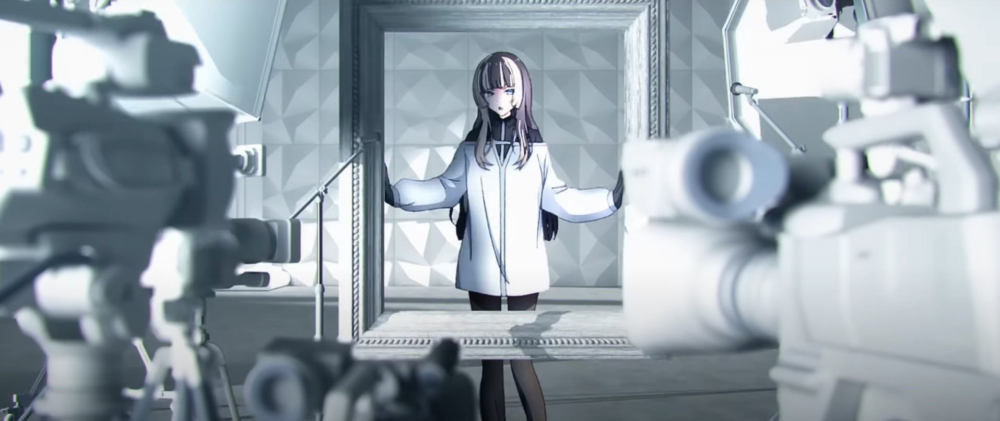
// らでん站在畫框後，畫面周圍則是數台對準らでん的攝影機。
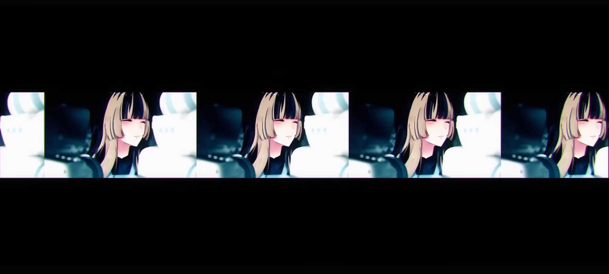
// 面對拍攝的らでん做出明顯的閃避轉頭動作，同時這個拍攝距離也無法看見先前的畫框。
はじめ部分
前半段的はじめ，有時小到可以躺在茶杯裡，有時又大到可以望向整個場景。
雖然不太明顯，但這裡身體的時大時小隱約點出了這部分：以大部分角度來說，自己擅長的舞蹈無法、或極難成為主角（把自我縮得比茶杯還小），但內心又矛盾的期望自己能夠靠著舞蹈站上C位（身體長得比場景還大）。
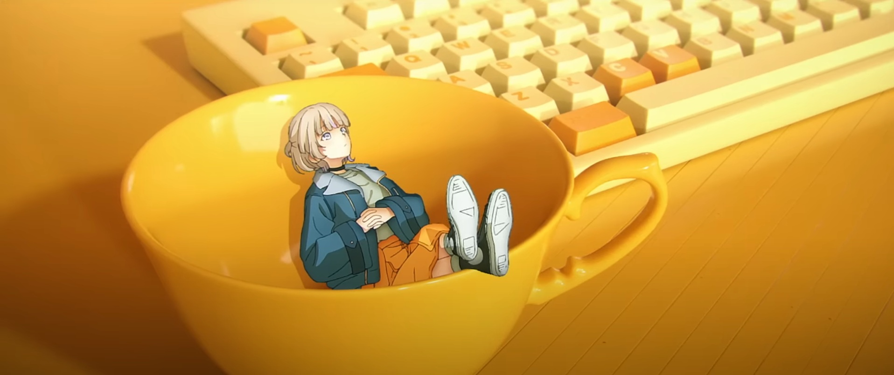
// はじめ斜躺在茶杯內一幕。
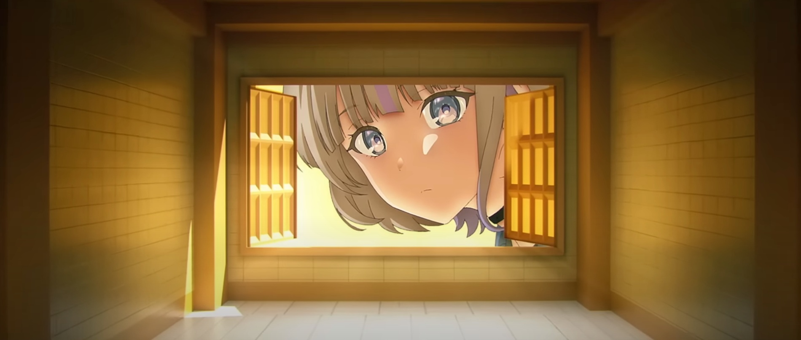
// 由窗戶和頭部的比例可看出此處的はじめ身體大小與場景相比非常懸殊。
畫面切到後半，此時的はじめ已經可以僅用指尖捏起茶杯。
但可以看到此處手指與茶杯的比例非常懸殊，若是手指再用力一些，茶杯很可能就會應聲碎裂。而はじめ視線的角度與其說是觀察，更像是在"審視"這個茶杯。
再來則是はじめ前半段曾望向的廊道，可以看到右側多出了一扇門（已經來到了這個以前嚮往的地方），但他此時身體的比例依舊與場景不合，後面的身材變化也更加劇，甚至被場景受限到無法做出任何肢體動作的狀態。
如果有走過地下街的人應該知道，很多舞蹈團體、或是學校熱舞社的學生很常會出沒在此類地方練舞，除了空間大以外，同時也能增加自己團體的曝光度。
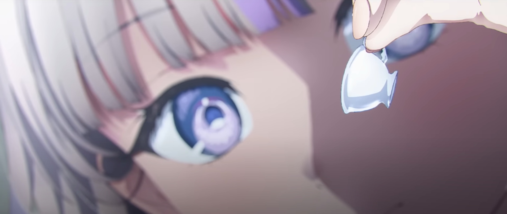
// はじめ捏起茶杯一幕。雖然色調不同，但由外觀仍可看出是前半段出現過的那個茶杯。
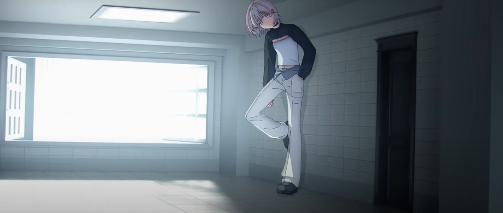
// 可從窗戶看出此處為先前はじめ望向的那個廊道，其身旁則多出了一道木門。
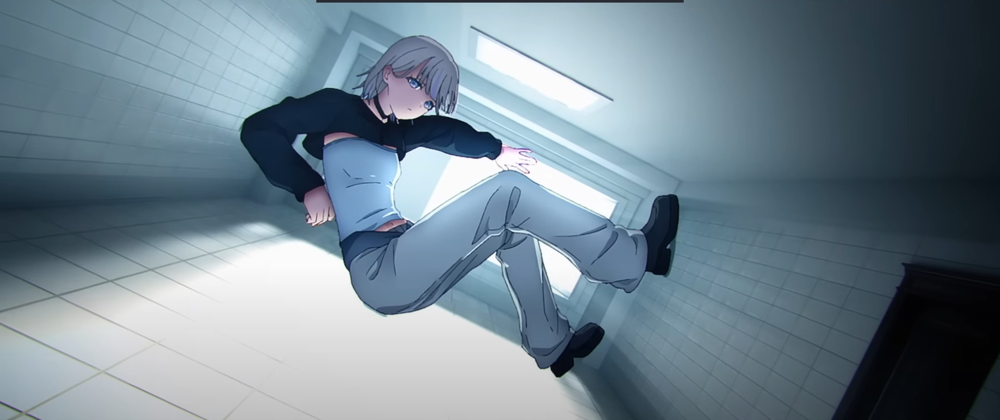
// 可明顯看出はじめ的身體大小已與場景不符，肢體幾乎是無法動彈的狀態。
莉々華部分
這段最吸睛的應該是那罐黃色指甲油了，莉々華則在下一幕推了一整車化妝品。
限界飯、發酒瘋，各種渾沌行為樣樣來。前期的莉々華比起建立人設，說是"做自己"可能更精準一些，用舒適的方式包裝自己（自己挑的化妝品）。
這段同時閃過大量莉々華手中拿著一面鏡子的片段。雖然擁有大量、多樣的化妝品，但由於拿著鏡子，即便成分複雜也能夠自己隨時檢查狀態（行為都還在尚未逾矩的範圍內）。
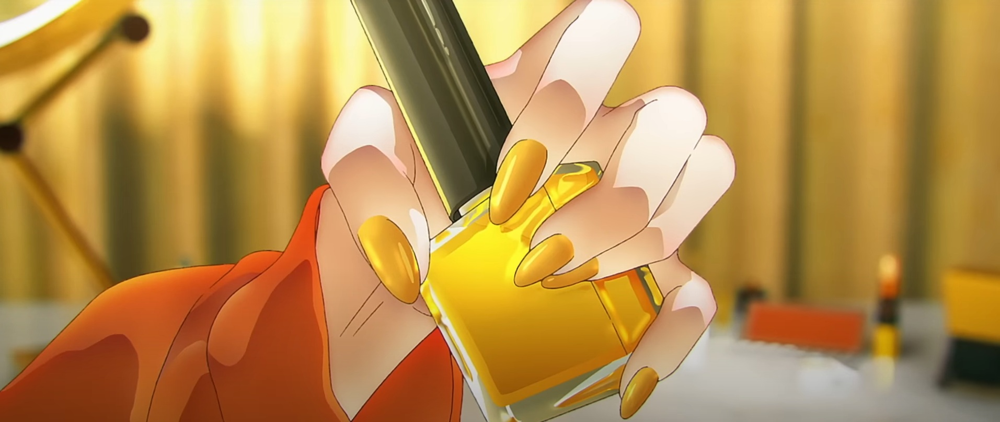
// 整段最吸睛的黃色指甲油。
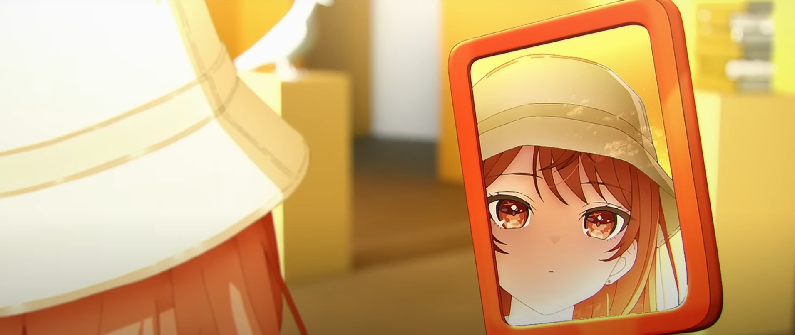
// 莉々華手握鏡子照向自己一幕。在這段中也有閃過許多近乎相同的畫面。
畫面轉到後半段，此處可以看到莉々華被塗有黃色指甲油的模型手抓著，後續鏡頭也停留在莉々華坐在原位被服務的畫面。
這裡可以解釋為後期需要做的事開始多了起來，不能再像以前那樣隨意、奔放（所有事情都在原位上完成），許多事務也已經被安排進固定的行程（側邊有手在幫莉々華打理）。
而雖然化妝、打扮這些東西仍舊有被排入，但已經無法由自己掌控了，甚至連自己挑的黃色指甲油都不是自己親手塗的。
後半段也完全不見鏡子的蹤影，四周取而代之的是大量無法反光的布料，也就更別提要映照出自己的臉了。
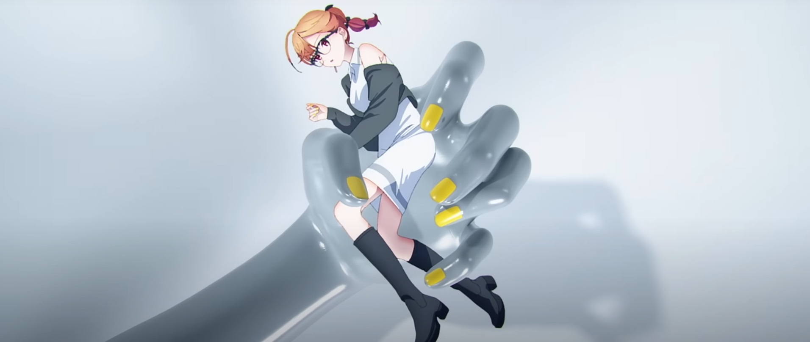
// 莉々華被塗著黃色指甲油的模型手抓住一幕。注意此處模型手的動作與先前握著黃色指甲油的手一模一樣。
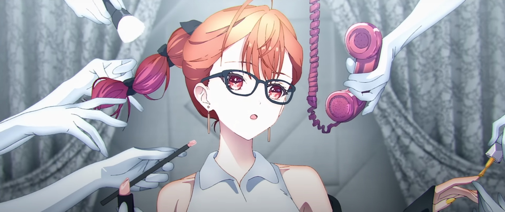
// 畫面四周有許多手在幫莉々華打理，右下角也出現了先前的黃色指甲油。
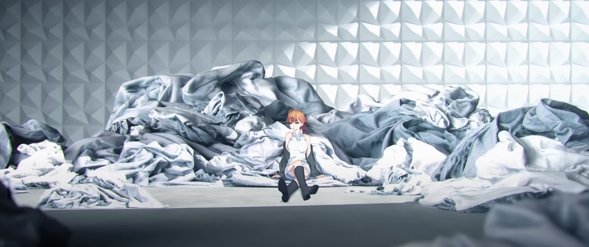
// 莉々華斜靠在大量布料堆中。此處甚至連背後的牆壁都被畫成稜角狀，即便能反射但也無法照清全貌。
奏部分
前半段的奏望著玻璃後的假人展示架，下一幕則坐在階梯上聽著音樂。
錄音室內通常會有兩間房間，一間裡面有麥克風架供歌手使用，另一間有處理混音的電腦及其他設備。兩個房間中間則會隔著一片玻璃窗戶，方便混音師監控錄音室內的情況。
此處可以將另一側的場景視為舞台（展示性質、錄音室內錄音唱歌），奏戴著耳機，嚮往著玻璃片後的另一片光景（想成為正式歌手，展示出自己的特長），而樓梯一幕的開放場景也揭示了他這時還待在外面的空間。
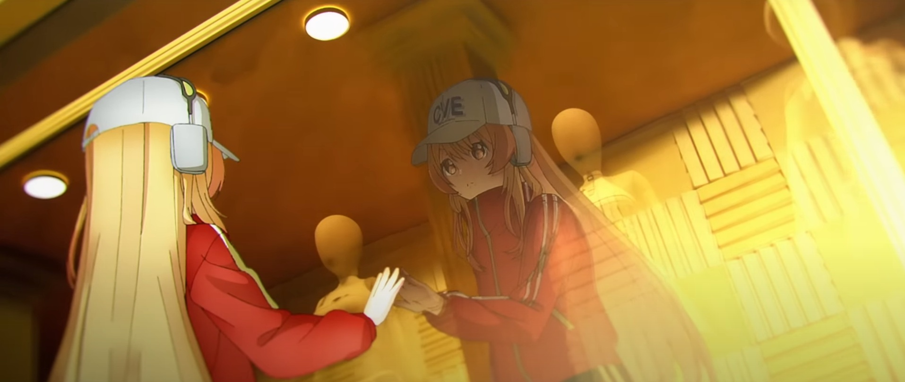
// 奏望向展示窗內一幕。可以看到內部擺放著數個假人模型。
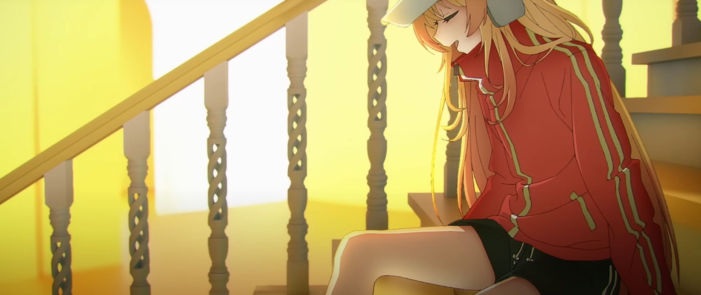
// 奏戴著耳機坐在階梯上。大量背光的背景可判斷此處為開放式空間，並非室內階梯。
來到後半段，這時的奏已經進入了室內的場景。
此處有個小細節，從先前莉々華拿著的鏡子反射中可以看到玻璃窗外的奏是有影子的，但在後半段玻璃窗內的奏卻沒有任何影子。雖然成為了理想中的模樣，但卻沒有一併把自己帶過來（影子淡化/消失），
而在更後面的場景中則有比前面更多的假人展示架，奏的身體動作與先前相比看上去也更僵硬，逐漸與一旁的假人同化。
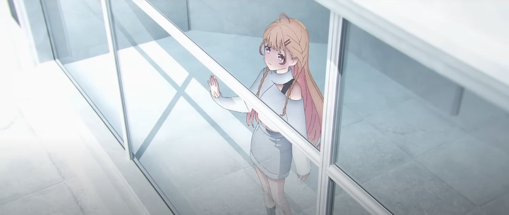
// 由兩側光線差異和影子方向，可看出此時的奏已經身處室內空間。
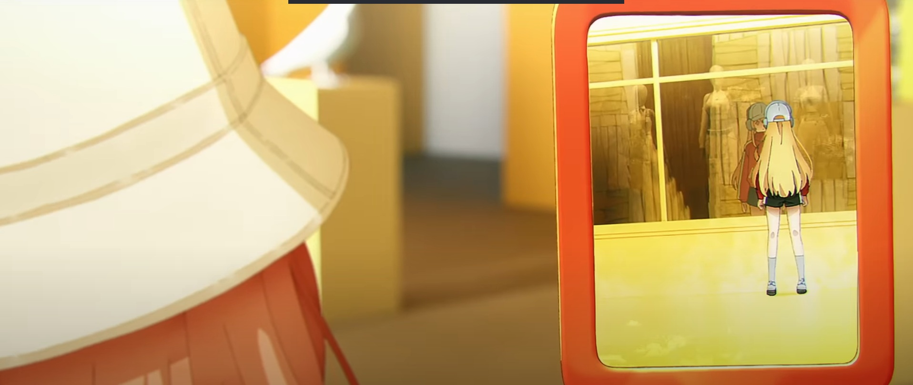
// 從鏡子反射中可以明顯看到室外的奏是有影子的，但在室內的奏腳下卻沒有任何影子。（可與上圖比對）
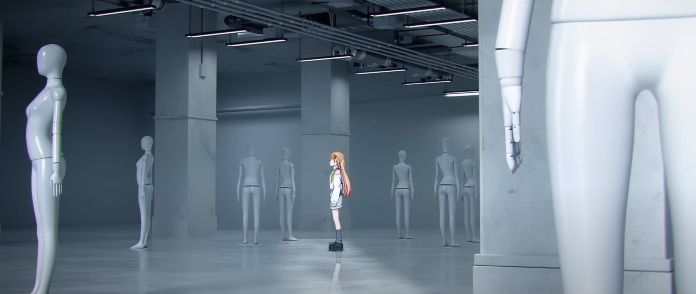
// 由奏動作上可以明顯看出並非放鬆狀態，而是僵硬的站立著。站姿也與一旁的假人相近。
轉折處
整部MV中我最喜歡的就是這個轉折的畫面。
最前面有提到，整部MV被分割為過去和現在兩個時間。身處白色空間的四人已經處於褪色，淡化的狀態，過去時間段的四人則出手做出了這個轉折。
らでん這邊已經沒有任何嘗試閃躲鏡頭的動作，只是靜靜地低頭站在畫框前任由攝影機拍攝。
此時過去的らでん一把將黃色簾子拉起，並將畫框、攝影機與らでん隔開。
你是個藝術品般的存在，但請別只把自己當成"藝術品"。
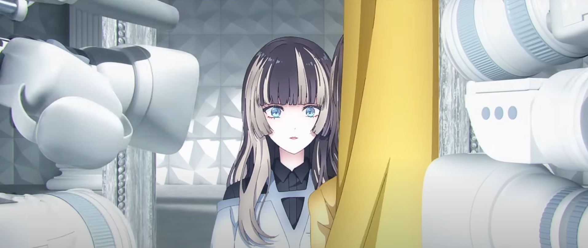
// 黃色布簾被拉起，注意此處的布簾並沒有把畫框一併遮住。
はじめ則是呈現接近雙手抱胸蜷縮的狀態。雖然可以看到一旁其實還有空間，但因為身體大小（高度）已經與空間相近，實際上也不太能改變姿勢。
這邊過去的はじめ則是直接將整個屋頂給拿起來。
繼續以舞蹈朝著更遠大的目標前進吧，你不該只是侷限在這。
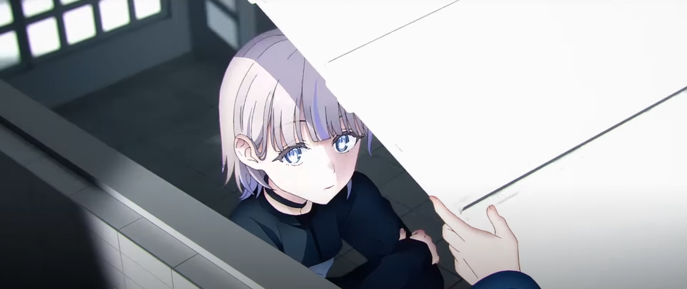
// はじめ原本身處的廊道此時變成了一個盒子般的空間，天花板則如蓋子般被從外拿起。
莉々華這裡則是半坐半躺在布料堆裡的姿勢。
椅子坐久雙腳會退化，再久一點甚至會讓人忘了自己是否還能夠走路。而過去的莉々華在這裡硬是一手把人給拉了起來。
不想再看看更多模樣的自己嗎？一起走吧！
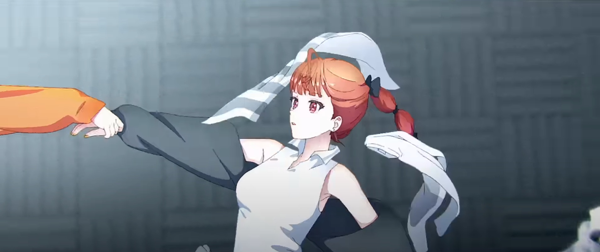
// 從半坐躺的姿勢被一把拉起的莉々華。個人很喜歡MV這邊的動態描寫，很有張力。
奏這裡就是靜靜地站在原地，看上去也沒有任何要走動或是變動姿勢的跡象。
過去的奏則從身後出現，一把抱了上去。
嘿──也換個姿勢吧！你可是有血有肉的人類呢。
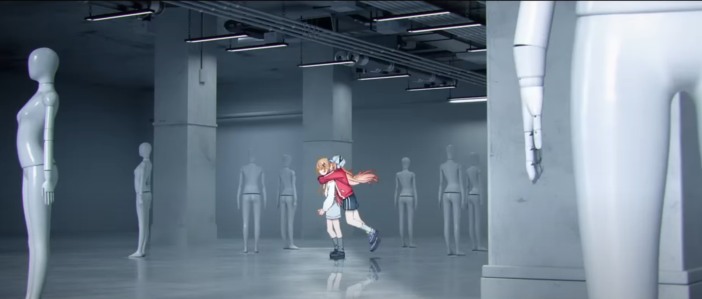
// 其實比起擁抱更像是飛撲，力道之大甚至讓現在的奏原本站立的姿勢向前傾了一些。
四人各自結尾
接近結束的部分也很值得細品。
這時的兩個らでん是面對面的模樣，已經不再是先前透過望遠鏡或貓眼查看的狀態了。現在的らでん臉上表情相較之前也放鬆許多。
而在這之前有一個像是向上甩開的轉場，可以視為是先前圍繞在四周的攝影機已經被拋開（遠離那些不知本意為何的視線，只專注在自己身上）。
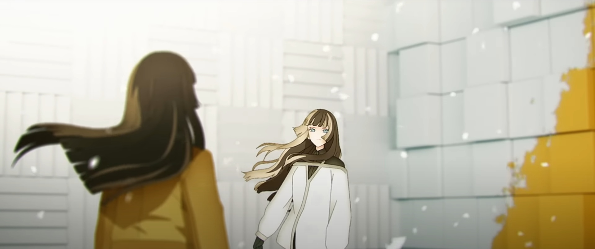
// 兩人正式的面對面。此處的畫面有向上甩開，但由於靜態截圖無法看得很明顯。
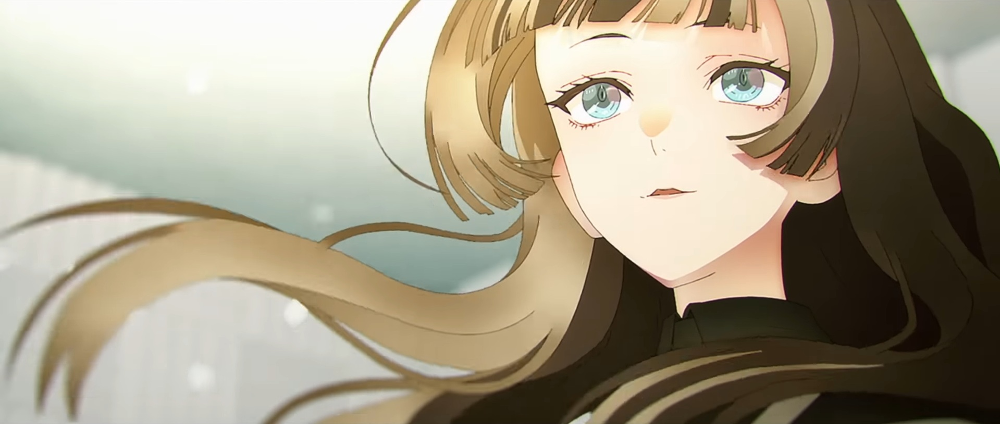
// 畫面拉近到現在らでん的臉部，表情充滿安心與輕盈。
奏這邊與之前的隔著玻璃對視不同，兩人直接抱在一起。
除了找回自我的意象以外，這裡也可以解讀為聽眾vs歌者的角色（自己就是自己的聽眾），現在的奏在擁抱之後也露出了安心的表情。
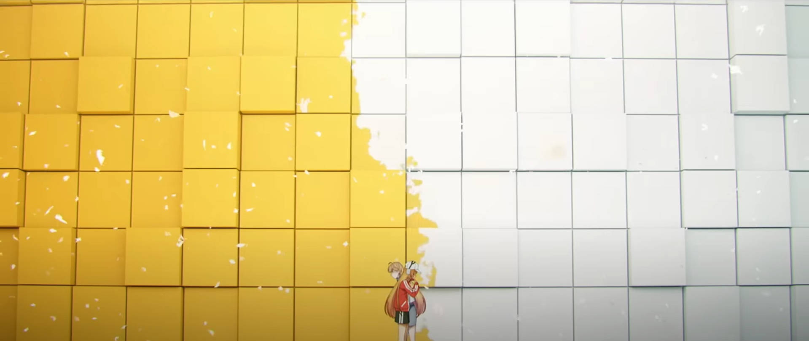
// 兩人相擁一幕，背景的黃色則從過去的奏方向延伸，很有意境。
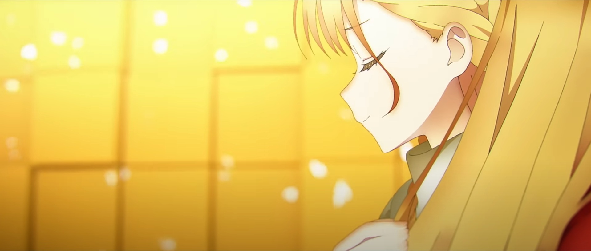
// 後面鏡頭拉近，奏的臉部表情與先前的肢體緊繃不同，有種放下重擔的感覺。
兩個はじめ則是直接躺在了地板看向天空。
身體活動到極限時，第一個反應一定會是想直接躺下，看向天空的這個動作也與先前的空間做出了對比（那時候的天花板是被封閉起來的）。
而從俯視的畫面中也能看見現在的はじめ姿勢比較不自然，側面也能顯示出他在之前的空間中待了多長時間。
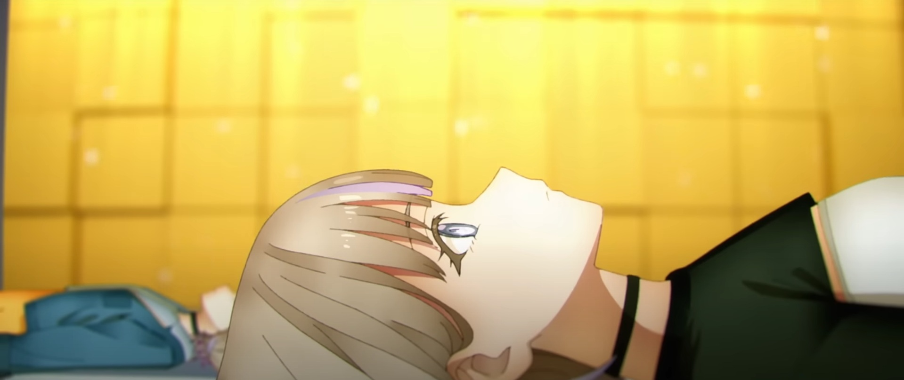
// 兩人躺在地上仰望一幕。
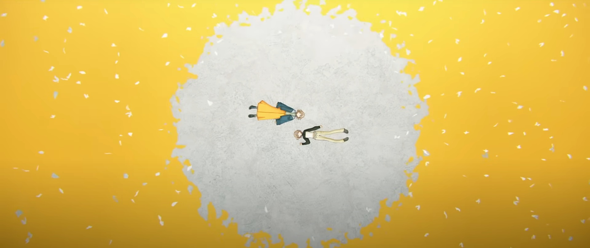
// 注意下方（也就是現在）的はじめ腿部相較過去的はじめ擺放較不自然，與前面的小空間（抱膝坐姿）相呼應。
莉々華則是被過去的自己猛力推了一把。
人在久坐/躺後站起來會有段CD時間，此時會覺得自己的腳和身體有些不聽使喚。這裡可以與前面的動作做出連貫解釋：
我已經拉了你一把，而既然你能站起來的話，那接下來該是你自己向前邁進的時候了。
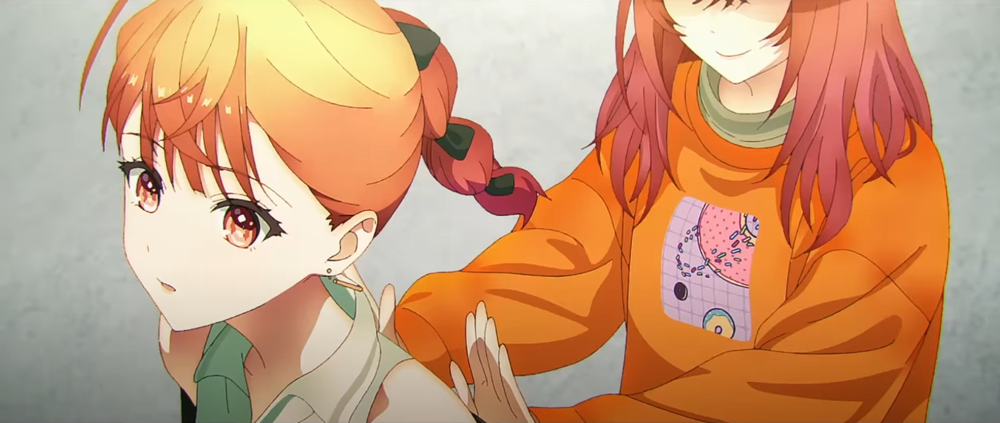
// 截得不太明顯，但這邊的作畫也非常有動態感，過去的莉々華真的推很大力XD
團體收尾
雖然結尾處的四人仍穿著白色服裝，但從背景染上的黃色以及表情、肢體動作可以看出，此時的他們已經不是過去或現在任一時間的他們，而是"準備邁向未來的他們"。
保留了過去的活力及熱情，同時不失其成熟與磨練出的專業，帶著這兩年間種種的回憶與經驗，邁向下一個舞台，也準備前往下一個階段。
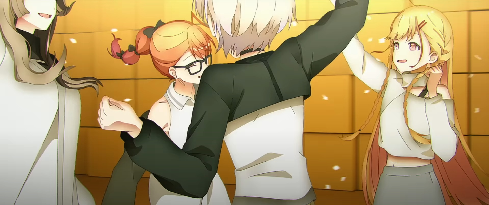
// 看上去活力滿滿的四人。
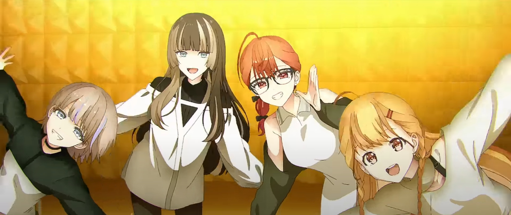
// 雖然身著色系較為冷硬的白灰衣裝，但仍舊擋不住這四人的俏皮和熱情。
莉々華結束一幕
莉々華曾說過雖然R團是類似偶像團體的導向，但其實要上台表演的技能不管是唱歌或跳舞，自己都還差其他成員一大截。這點也能從先前釋出的幕後影片看出些許端倪。
在這邊最後一幕踏出的那步畫給他，側面更能顯示出其決心。
雖然自己沒有像其他團員各自都有著特別出色的技能，但仍舊想靠自己的雙腳走出屬於自己的道路，只要努力前進，一定也能跟上其他人的腳步。
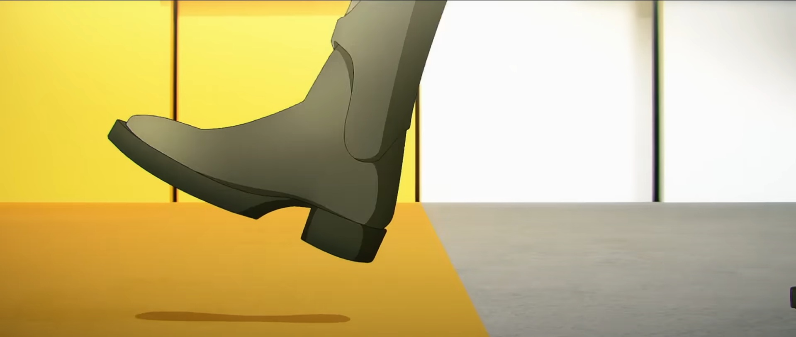
//
與前面三位轉場時逐漸染上的黃色不同，此處的黃色背景是被固定位置的，
莉々華則主動踏出了邁向黃色區域的那一步。
MV片頭與片尾
秋天，象徵著一個完整循環的結束及開始，而MV的片頭和片尾場景也銜接了起來。
可以看到兩張圖其實是在同一個場景中，運鏡的方向也相同（由右至左），就像是攝影機在周遭繞了一圈後又回到了這個地方。
雖然回到了同個地方，但四人在這其中也經歷了各種蛻變與成長，
如今準備邁入的，是下一個"全新的循環"。
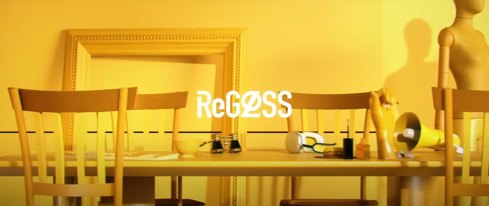
// MV片頭截圖。
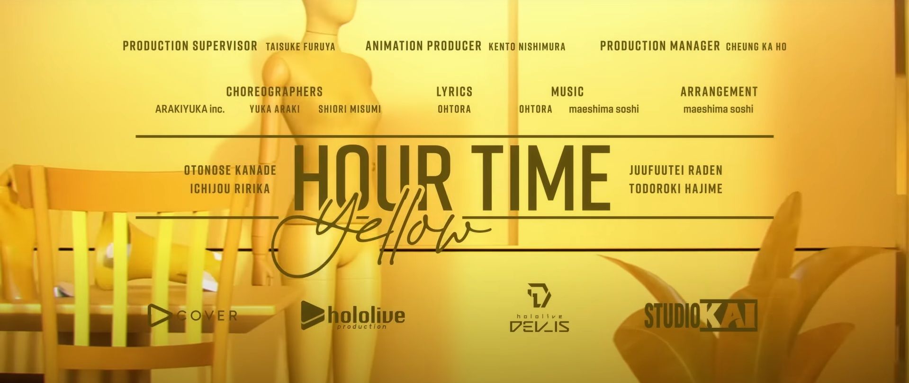
// MV片尾截圖，可以看到此處背景物品擺放與片頭是一模一樣的。
其實連我自己都沒預料到會寫這麼多XD。
記得當時是在YT的留言區下看到幾則關於MV的猜想，後來仔細一看發現煞有其事，加上自己又觀察出一些留言內沒提到的細節，於是就這麼一股腦地栽進去了。
只記得有一整個晚上都在瘋狂拉MV時間軸看細節，又花了一個晚上把觀察到的細節全打出來，接著就變成3000字長心得了（？）
不過以往都是看別人的解說，這是第一次自己寫解析文，如果有解釋不一的地方還請見諒！